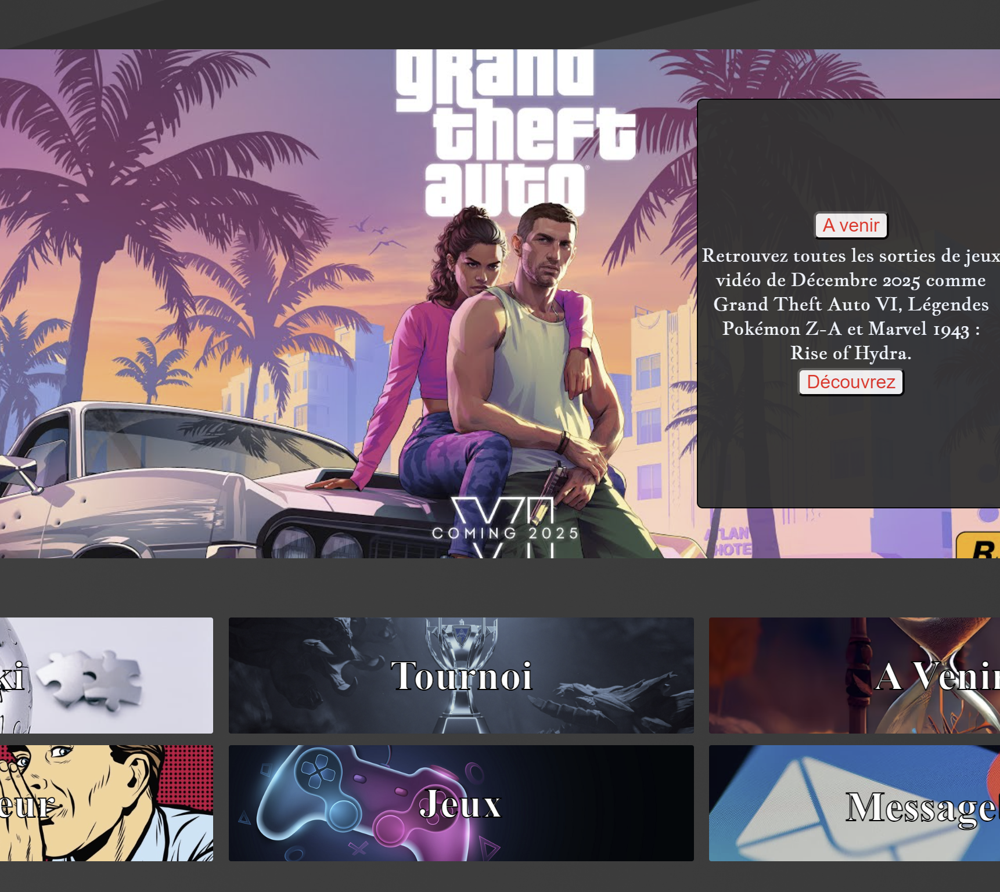

A video game forum built with Go (API + server) and vanilla web tech.
GameTalk is a forum dedicated to video games. Users can log in, browse categories, create topics, react with likes/dislikes, and discuss via comments. The project is split into two Go apps (API + server) and a classic HTML/CSS/JavaScript front-end.
The goal was a complete end-to-end forum flow: authentication, content creation, and interactions, while keeping it simple to run locally.
